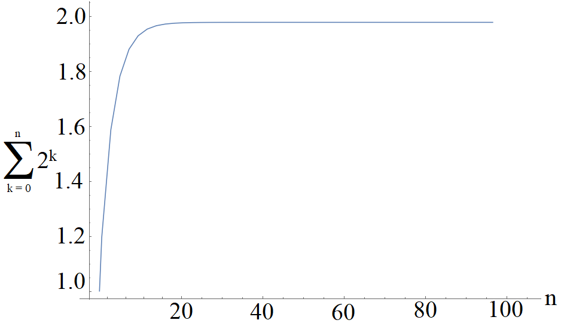

Series#
Defintions#
Consider a collection of numbers, such as the first 10 integer powers of 2:
and we call this collection a Sequence. We can write this using mathematical notation:
where \(a_n\) is the \(n^{th}\) element in the sequence. Another very common sequence is the so-called Fibonacci Sequence, where the next term is the sum of the previous two:
which we can write in mathematical notation as a recurrence relation:
If we have such an ordered collection of numbers, then we can also add them together, which we call a Series. We can write a series in mathematical notation:
We call this a Finite series and in the limit \(N \rightarrow \infty\), we can define an Infinite series:
Arithmetic Series#
An Arithmetic Series \(S_n\) has \(n\) terms, with First Term \(a\) and Common Difference \(d\):
We can sum up an arithmetic series by manipulating the order of the series and adding:
An example, find the sum of first 100 integers,
\(S_1 = 1 + 2 + \dots + 100= \sum_{n=1}^{100}n\)
Geometric Series#
A Geometric Series \(S_n\) has \(n\) terms, with first term \(a\) and Common Ratio \(r\):
and likewise we can sum up a geometric series by shifting powers and subtracting:
An example, find
\(S_2 = \sum_{n=1}^{10}\sin^n(\theta),\, 0 \leq \theta < 2\pi\)
We can also define an Infinite Geometric Series \(S_{\infty}\):
There is a formula for \(S_\infty = \frac{a}{1-r}\), although whether or not we can use this formula depends on whether the series will converge, which here depends on if \(|r| < 1\).
An example, find the sum of the series
\(S_3 = \frac{1}{3} + \frac{1}{9} + \frac{1}{27} + \dots = \sum_{n=1}^\infty\frac{1}{3^n} \)
\(\Rightarrow a =\frac{1}{3}\), \(r = \frac{1}{3}\) and since \(|r| = \frac{1}{3} <1 \), series converges, therefore:
Convergence#
For a finite series:
it should be fairly clear that provided the form of the terms \(a_n\) remains finite, then the value of the series itself will be finite, we say that the series Converges. However, if the series is infinite:
then it turns out even if \(a_n\) remains finite, the series may not sum to a finite value. Such a series Diverges.
An example of a convergent series:
Recall this is a geometric series with \(a = 1, \, r = \frac{1}{2}\), and the series converges to:
If we plot the Partial Sums of the series, which we find by adding up all \(n\) terms while increasing the value of \(n\):

it appears to show the limiting behavior as we approach ever increasing \(n\).
Now suppose we had an infinite geometric series with \(a = 1, \, r = 1\):
\(S_2\) would be an example of a divergent series because this sum will just keep growing to infinity. In fact, for a geometric series, we can prove that provided \(|r| < 1\) and \(a\) is finite, then the series will always converge.
Another example of a divergent series is the Harmonic Series:
If we plot the partial sums this time, we find:
You might think from looking at the plot that the series would converge, however, it turns out that the terms increase just a little too quickly for this to happen.
In order to prove this, we need to develop some more rigorous mathematical tools, known as Convergence Tests. The sign of the terms in the series is also important. To see this, consider the terms of the harmonic series with alternating signs:
By plotting the partial sums, we see the series is bounded from above and below, and thus it converges (it turns out \(S_4 = \ln(2) \approx 0.69\)):
Convergence Tests#
We can define an infinite series \( S \)
and ask the question, is \( S \) a finite number or does it tend to infinity for different choices of \( a_n \)? To help us work this out, we have a number of standard tests we can employ:
Preliminary Test
The preliminary test is a simple way to identify, before doing any heavy mathematical lifting, whether or not the terms in the series are strictly increasing: \( a_{n+1} > a_n \).
If in the infinite limit, \( \lim_{n \rightarrow \infty} a_n \) the terms do not approach zero, then the series will diverge.
Note that this is not saying the series will definitely converge, however it is a helpful first indicator as to whether or not subsequent tests should be employed.An example:
\[S_1 = \sum_{n=1}^\infty 2^n = 2^1 + 2^2 + 2^3 + \dots\]Clearly we can see that:
\[\lim_{n \rightarrow \infty} a_n \rightarrow \infty\]and so \( S_1 \) fails the preliminary test and will diverge.
Ratio Test
We can define the limit:\[\rho = \lim_{n\rightarrow \infty} \left| \frac{a_{n+1}}{a_n} \right|\]and find three separate cases for the value of \( \rho \):
\[\begin{split}\rho \rightarrow \begin{cases} \text{< 1} & \text{series converges} \\ \text{= 1} & \text{test inconclusive} \\ \text{> 1} & \text{series diverges} \end{cases}\end{split}\]An example:
\[S_2 = \sum_{k=1}^{\infty} \frac{k^2}{2^k}\]\[\rho = \lim_{k \rightarrow \infty} \left | \frac{(k+1)^2}{2^{k+1}} \frac{2^k}{k^2} \right| = \lim_{k \rightarrow \infty} \left| \frac{2^k}{2^{k+1}} \frac{(k+1)^2}{k^2} \right| = \lim_{k \rightarrow \infty} \left| \frac{1}{2} \frac{(k+1)^2}{k^2} \right| = \lim_{k \rightarrow \infty} \left| \frac{1}{2} \left(1 + \frac{1}{k}\right)^2 \right| \Rightarrow \frac{1}{2} < 1 \Rightarrow \text{converges}\]Comparison Test
Sometimes it is possible to see that a series converges by comparing it to a known convergent series.An example:
\[S_3 = \sum_{n=1}^{\infty} 2^{-n} \cos(n)\]We know that the related but simpler series:
\[S_4 = \sum_{n=1}^{\infty} 2^{-n}\]is a geometric progression with \( a = r = 2^{-1} \) and therefore is convergent to \( S_4 = 1 \). Additionally, since \( -1 < \cos(n) < 1,\, \forall n \in \mathbb{Z} \), the value of some of \( S_3 \)‘s terms will be less than those in \( S_4 \), hence \( S_3 \) will converge to a finite value less than \( S_4 \), and therefore by the comparison test, \( S_3 \) is convergent. (It turns out that while \( S_4 = 1 \), \( S_3 = 0.028\dots \).)
Interval of Convergence#
Consider the series:
Clearly, if \( x=1 \) here, then \( S_5 \) will be a convergent series, but are there values of \( x \) that will change this statement?
We can apply the ratio test again here:
If we are aiming for convergence, then we need \( \rho < 1 \), which means:
for the series \( S_5 \) to be convergent. Any values of \( x \) outside of this interval, and the series will fail the ratio test and thus diverge.
An example: find the interval of convergence for the series:
Applying the ratio test:
For convergence, we need \( \rho < 1 \), which corresponds to \( |x| > 2 \Rightarrow x > 2,\, x < -2 \).
Method of Differences#
Finite Case#
Sometimes it is possible to evaluate the result of a series
due to the fact that some terms in the series cancel out. An example:
We can expand out this series term by term and see some cancellation occurs:
A question may appear not to have an obvious difference set out, an example:
For a fraction of this form, we can make use of partial fractions:
Equating numerators gives:
So looking again at the series:
which is now in the form of the method of differences.
Expanding out the first few and last few terms allows us to spot the pattern:
Infinite Case#
If we have a series which is composed of an infinite number of terms, it is possible to apply the method of differences to see if it converges. An example:
which we can rewrite as:
and after solving by the method of differences, take the limit \( N \rightarrow \infty \):
Sums of Series#
We can use the method of differences to find the sums of different power series: